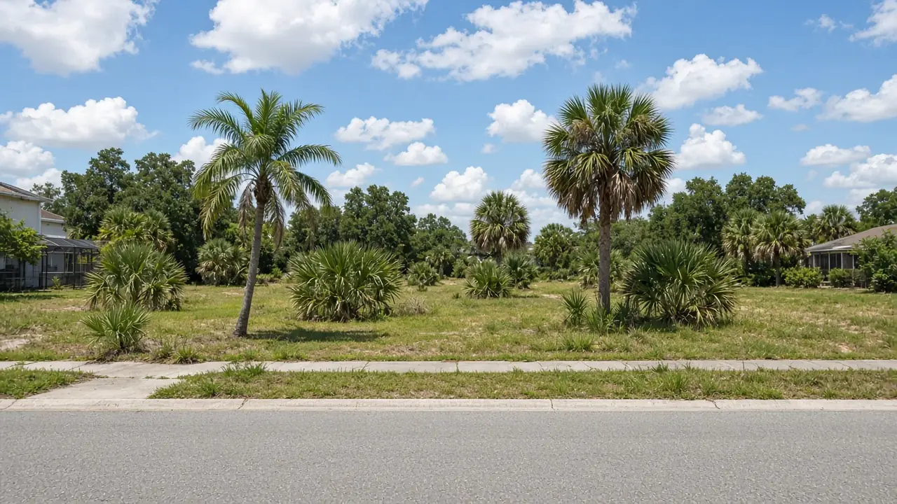

Upcoming county auction
Pasco County, Florida tax deed sale: December 3, 2026
Online auction Thursday, December 3, 2026 at 10:00 a.m. at pasco.realtaxdeed.com. ACH deposits take five full business days to settle, and wired balances are due by 4:00 p.m. on sale day.14
Order a Research Pack for a sale parcel
Order by Friday, November 20, 2026 to have the pack before you fund an ACH deposit for the Thursday, December 3 sale. Packs are emailed within about 4 business hours after payment and a complete address or parcel ID are received.

Sale facts (sourced)
- County: Pasco County, Florida
- Sale date and time: Thursday, December 3, 2026 at 10:00 a.m.123
- Where: Online at pasco.realtaxdeed.com (RealAuction); register there and place a deposit before the sale5
- Schedule: The Clerk holds tax deed sales on Thursdays, monthly as necessary, starting at 10:00 a.m., and posts a sale list online5
- Notice: The noticed certificates were published Oct. 30 and Nov. 6, 13 and 20, 2026123
The Clerk and RealAuction state they are not responsible for the quality or accuracy of information on the RealAuction site. Re-check each item’s status before you bid.5
Deposit and payment rules from the Clerk
| Step | Rule | Deadline for the Dec 3 sale |
|---|---|---|
| Bidder deposit | At least 5% of the estimated high bid or $200, whichever is greater, for each item you expect to win; applied to your final bid4 | On deposit before the sale starts4 |
| ACH deposit | Needs five full business days to settle and must clear before the sale starts4 | Start it well before Thanksgiving week (our reading; confirm holiday closures with the Clerk) |
| Cash or cashier’s check deposit | Delivered to the East Pasco Government Center (14236 6th Street, Suite 201, Dade City) or the West Pasco Government Center (8731 Citizens Drive, New Port Richey); create your RealAuction login first; cashier’s checks no more than six months old46 | By 9:00 a.m. ET on sale day, Dec 34 |
| Balance, recording fees, documentary stamps ($0.70 per $100) | Wire, transfer from your RealAuction deposit account, cash or cashier’s check; no ACH, split payments, personal or business checks for the bid46 | Wires by 4:00 p.m. Dec 3; all payments received before 10:00 a.m. ET the next business day (Friday, Dec 4)46 |
The weekday dates are our calculation from the Clerk’s rules for a Thursday sale. Confirm exact cutoffs with the Clerk.
Example certificates noticed for 12/3/26
These rows come from Notices of Application for Tax Deed dated October 20, 2026.123 They are examples, not the full sale list. Use the Clerk’s sale list and RealAuction for the complete, current inventory.5
| Certificate | Parcel | Legal description (as published, shortened) |
|---|---|---|
| No. 2220395 · issued 06/01/20231 | 34-26-17-0020-00100-0390 | Holiday Club No 2, PB 8 PG 31, Lot 39 Blk 1, subject to access easement |
| No. 2204992 · issued 06/01/20232 | 15-25-17-0100-17700-0040 | Moon Lake No 10, MB 5 PGS 128 to 131, Lots 4 and 5 Blk 177 |
| No. 2202345 · issued 06/01/20233 | 31-25-20-0100-069N0-0000 | Williams Acres unrecorded plat, Tract 69N (metes and bounds) |
Street address, structure, acreage, opening bid and redemption status are NOT VERIFIED here. One parcel is subject to an access easement and another sits in an unrecorded plat, so check legal access, utilities and other recorded liens before you bid.
Research before you bid
Notices give a parcel number and legal description, not a full picture of the property. A Tax Deed Due Diligence Research Pack organizes cited public record information for one US property into a PDF you can review before you fund a deposit.
- $149 per property · research only · emailed PDF
- Footnoted sources; material facts without an establishing source are marked NOT VERIFIED
- Not an appraisal, title search, legal opinion, or bid recommendation
Official links
Before you bid: research checklist and other sales
Work through our Florida tax deed due diligence checklist before sale day, or order a sourced Research Pack for one parcel.
Other Florida county sales: Orange County November 5, 2026 · Osceola County November 10, 2026 · Seminole County November 12, 2026 · Volusia County November 17, 2026 · Pinellas County November 18, 2026 · Polk County November 19, 2026 · Marion County December 9, 2026 · Brevard County December 10, 2026
Footnotes / sources
- Notice of Application for Tax Deed 2026XX000241TDAXXX (Pasco County), holder ATCF II Florida A LLC, certificate No. 2220395, year of issuance 06/01/2023, parcel 34-26-17-0020-00100-0390; to be sold to the highest bidder online at http://pasco.realtaxdeed.com on December 03, 2026 at 10:00 am unless redeemed; dated October 20, 2026, Office of the Pasco County Clerk and Comptroller; published Oct. 30, Nov. 6, 13, 20, 2026. Text as reproduced by NoticeRegistry (not the publisher), retrieved 1 Nov 2026. https://www.noticeregistry.com/florida/notice/tax-sale-11724129
- Notice of Application for Tax Deed 2026XX000200TDAXXX (Pasco County), holder Community Red Co and Banesco USA, certificate No. 2204992, year of issuance 06/01/2023, parcel 15-25-17-0100-17700-0040; same sale terms, date and publication dates as note 1. Retrieved 1 Nov 2026. https://www.noticeregistry.com/florida/notice/tax-sale-11724165
- Notice of Application for Tax Deed 2026XX000240TDAXXX (Pasco County), holder ATCF II Florida A LLC, certificate No. 2202345, year of issuance 06/01/2023, parcel 31-25-20-0100-069N0-0000; same sale terms, date and publication dates as note 1. Retrieved 1 Nov 2026. https://www.noticeregistry.com/florida/notice/tax-sale-11724159
- Pasco County Clerk and Comptroller, Tax Deed Sales Fees and Costs: deposit of at least 5% of estimated high bid or $200 per item via RealAuction; ACH five full business days to settle and must clear before the sale; cash or cashier’s checks to the East or West Pasco Government Center by 9 a.m. ET on sale day; balance plus recording fees and documentary stamps ($0.70 per $100); wires by 4 p.m. on sale day; all payments before 10 a.m. ET the following business day; no personal checks for the bid. Retrieved 1 Nov 2026. https://pascoclerk.com/204/Fees-Costs
- Pasco County Clerk and Comptroller, Tax Deed Sales: register at pasco.realtaxdeed.com and place a deposit before the sale; sales held online on Thursdays, monthly as necessary, beginning at 10:00 a.m.; sale list online; Clerk and RealAuction not responsible for accuracy of site information. Retrieved 1 Nov 2026. https://www.pascoclerk.com/201/Tax-Deed-Sales
- Pasco County Clerk and Comptroller, Public Tax Deed Information: create RealAuction login before delivering deposit funds; cashier’s checks no more than six months old; ACH, split payments, personal and business checks not accepted for final payment. Retrieved 1 Nov 2026. https://app.pascoclerk.com/public-sup-svcs-tax-deed-info.asp
INFORMATION AND RESEARCH PRODUCT ONLY. This page summarizes public sources for investors researching an upcoming sale. It is not legal, tax, or investment advice. Tax Deed Pack does not conduct the auction and does not guarantee title.